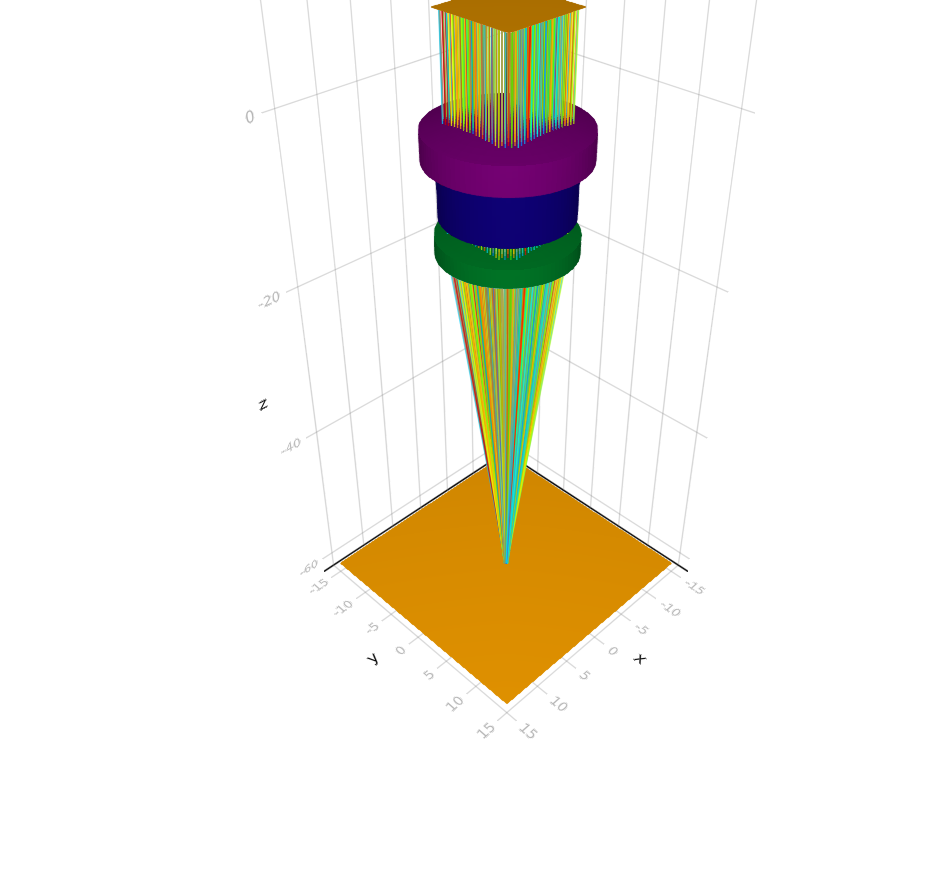
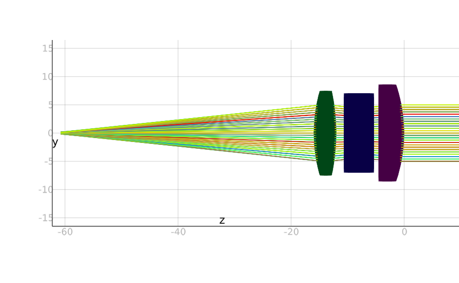
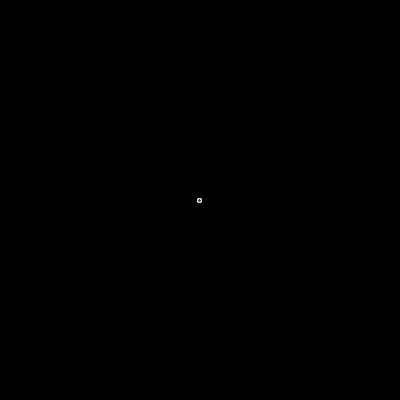
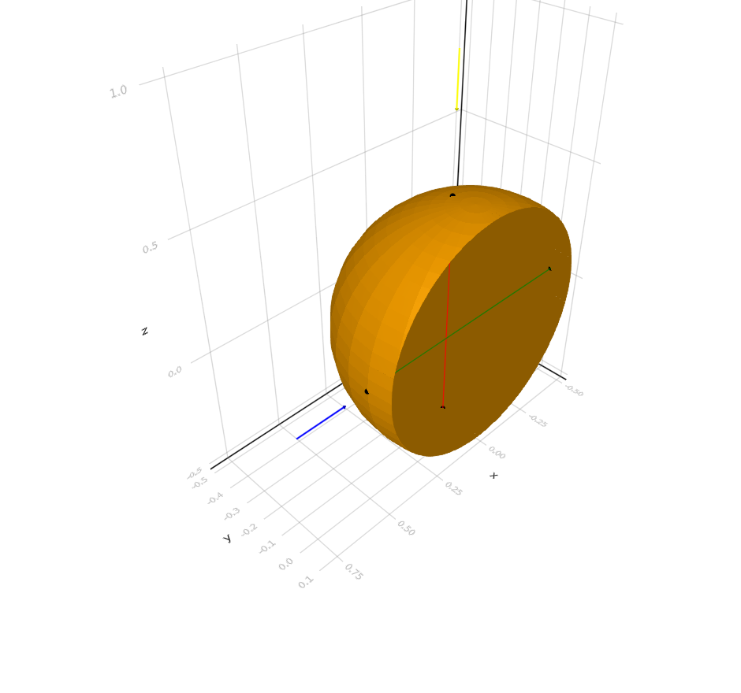
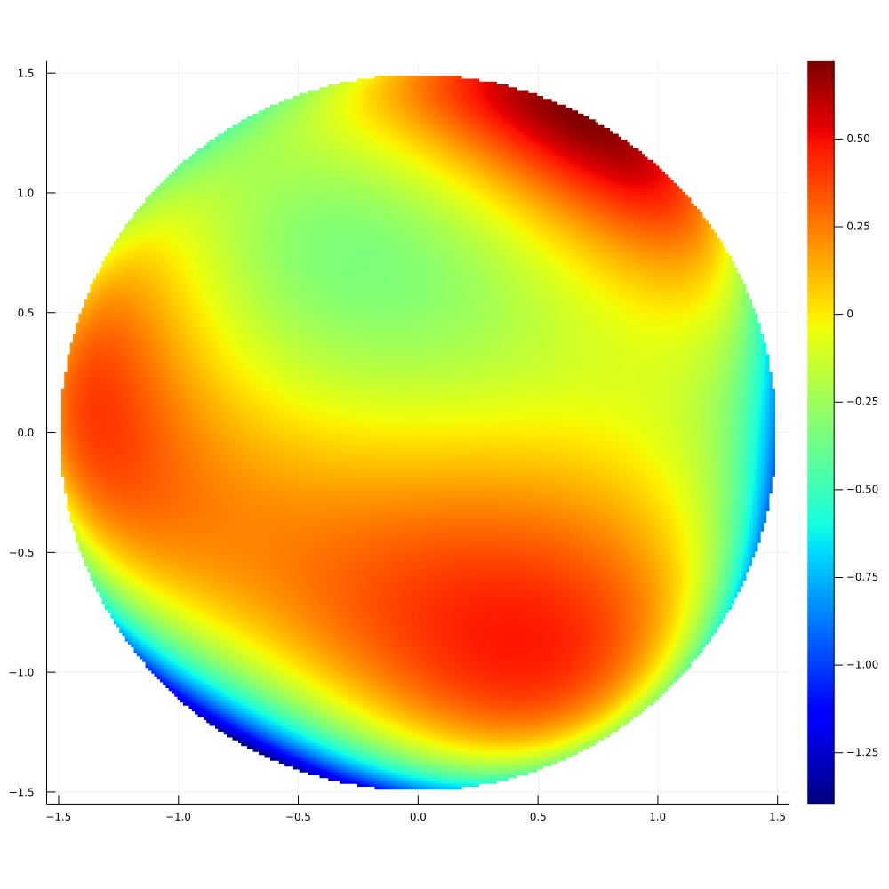

Visualization
There are a number of powerful visualization tools available, we primarily rely on 3D visualization of systems using Makie.
There are a number of helper methods, as well as the ability to draw objects, surfaces, points, rays and more individually. For example, looking at rays passing through a system in 3D and 2D:
Vis.drawtracerays(Examples.cooketriplet(), trackallrays=true, test=true, numdivisions=100)Vis.drawtracerays(Examples.cooketriplet(), trackallrays=true, test=true, numdivisions=100)
Vis.drawtracerays(Examples.cooketriplet(), trackallrays=true, test=true, numdivisions=100, drawsys=true, resolution = (1000, 700))
Vis.make2dy()[ Info: Makie/AbstractPlotting is caching fonts, this may take a while. Needed only on first run!
 
And the image on the detector for a trace of a system:
Vis.drawtraceimage(Examples.cooketriplet(), test=true)im = Vis.drawtraceimage(Examples.cooketriplet(Float64, 400), test=true)
Basic Drawing
These methods are all you need to build up a visualization piece by piece. For example:
obj = csgintersection(Sphere(0.5), Plane(0.0, 1.0, 0.0, 0.0, 0.1, 0.0))()
ray1 = Ray([0.0, -0.1, 1.0], [0.0, 0.0, -1.0])
ray2 = Ray([0.8, 0.0, 0.0], [-1.0, 0.0, 0.0])
Vis.draw(obj)
Vis.draw!(ray1, rayscale=0.2)
Vis.draw!(ray2, rayscale=0.2, color=:blue)
Vis.draw!(surfaceintersection(obj, ray1), color=:red)
Vis.draw!(surfaceintersection(obj, ray2), color=:green)
OpticSim.Vis.scene — Functionscene(resolution = (1000, 1000))Create a new Makie scene with the given resolution including control buttons.
OpticSim.Vis.draw — Functiondraw(ob; resolution = (1000, 1000), kwargs...)Draw an object in a new scene. kwargs depends on the object type.
OpticSim.Vis.draw! — Methoddraw!([scene = currentscene], ob; kwargs...)Draw an object in an existing scene. kwargs depends on the object type.
OpticSim.Vis.save — Functionsave(path::String)Save the current Makie scene to an image file.
Helper Methods
These are the helper methods to provide common visualizations more easily, as used above. Another example:
Vis.surfacesag(AcceleratedParametricSurface(TestData.zernikesurface2()), (256, 256), (1.55, 1.55))p = Vis.surfacesag(AcceleratedParametricSurface(TestData.zernikesurface2()), (256, 256), (1.55, 1.55))QStandardPaths: XDG_RUNTIME_DIR not set, defaulting to '/tmp/runtime-runner'

OpticSim.Vis.drawtracerays — Functiondrawtracerays(system::Q; raygenerator::S = Source(transform = Transform.translation(0.0,0.0,10.0), origins = Origins.RectGrid(10.0,10.0,25,25),directions = Constant(0.0,0.0,-1.0)), test::Bool = false, trackallrays::Bool = false, colorbysourcenum::Bool = false, colorbynhits::Bool = false, rayfilter::Union{Nothing,Function} = onlydetectorrays, kwargs...)Displays a model of the optical system. raygenerator is an iterator that generates rays. If trackallrays is true then ray paths from the emitter will be displayed otherwise just the final rays that intersect the image detector will be shown, not the entire ray path. colorbysourcenum and colorbynhits will color rays accordingly, otherwise rays will be colored according to their wavelength.
By default only ray paths that eventually intersect the detector surface are displayed. If you want to display all ray paths set rayfilter = nothing.
Also drawtracerays! to add to an existing scene, with drawsys and drawgen to specify whether system and raygenerator should be drawn respectively.
OpticSim.Vis.drawtraceimage — Functiondrawtraceimage(system::Q; raygenerator::S = Source(transform = translation(0.0,0.0,10.0), origins = Origins.RectGrid(10.0,10.0,25,25),directions = Constant(0.0,0.0,-1.0)), test::Bool = false)Traces rays from raygenerator through system and shows and returns the detector image. verbose will print progress updates.
OpticSim.Vis.spotdiag — Functionspotdiag(sys::CSGOpticalSystem{T}, raygenerator::OpticalRayGenerator{T}; size = (500, 500), kwargs...)Plot a spot diagram for an arbitrary CSGOpticalSystem and OpticalRayGenerator. All rays from raygenerator will be traced through sys and their intersection location on the detector plotted.
Also spotdiag! of the same arguments to add to an existing plot.
spotdiag(sys::AxisymmetricOpticalSystem{T}; size = (500, 500), hexapolar::Bool = true, collimated::Bool = true, samples::Int = 5, wavelength::T = 0.55, sourceangle::T = zero(T), sourcepos::SVector{3,T} = SVector{3,T}(0.0, 0.0, 10.0), kwargs...)Plot a spot diagram for an AxisymmetricOpticalSystem, rays are distributed across the entrance pupil of the system either in a hexapolar of rectangular grid pattern depending on hexapolar.
The input rays can be collimated, in which case the sourceangle parameter determines their direction. Otherwise rays are treated as coming from a point source at sourcepos.
Also spotdiag! of the same arguments to add to an existing plot.
OpticSim.Vis.surfacesag — Functionsurfacesag(object::Union{CSGTree{T},Surface{T}}, resolution::Tuple{Int,Int}, halfsizes::Tuple{T,T}; offset::T = T(10), position::SVector{3,T} = SVector{3,T}(0.0, 0.0, 10.0), direction::SVector{3,T} = SVector{3,T}(0.0, 0.0, -1.0), rotationvec::SVector{3,T} = SVector{3,T}(0.0, 1.0, 0.0))Calculates and displays the surface sag of an arbitrary Surface or CSGTree.
Rays are shot in a grid of size defined by resolution across a arectangular area defined by halfsizes. This rectangle is centred at postion with normal along direction and rotation defined by rotationvec. offset is subtracted from the sag measurements to provide values relative to the appropriate zero level.
OpticSim.Vis.eyebox_eval_eye — Functioneyebox_eval_eye(assembly::LensAssembly{T}, raygen::OpticalRayGenerator{T}, eye_rotation_x::T, eye_rotation_y::T, sample_points_x::Int, sample_points_y::Int; pupil_radius::T = T(2.0), resolution::Int = 512, eye_transform::Transform{T} = identitytransform(T))Visualise the images formed when tracing assembly with a human eye for an evenly sampled sample_points_x × sample_points_y grid in the angular range of eyeball rotations -eye_rotation_x:eye_rotation_x and -eye_rotation_y:eye_rotation_y in each dimension respectively. resolution is the size of the detector image (necessarily square).
The eye must be positioned appropriately relative to the system using eye_transform, this should transform the eye to the correct position and orientation when at 0 rotation in both dimensions. By default the eye is directed along the positive z-axis with the vertex of the cornea at the origin.
The result is displayed as a 4D image - the image seen by the eye is shown in 2D as normal with sliders to vary eye rotation in x and y. The idea being that the whole image should be visible for all rotations in the range.
OpticSim.Vis.eyebox_eval_planar — Functioneyebox_eval_planar(assembly::LensAssembly{T}, raygen::OpticalRayGenerator{T}, eyebox::Rectangle{T}, sample_points_x::Int, sample_points_y::Int, vsize::T; pupil_radius::T = T(2.0), resolution::Int = 512)Visualise the images formed when tracing assembly for multiple pupil positions within a planar eyebox. Any angles which are present in a circle radius pupil_radius around each sampling point on an even sample_points_x × sample_points_y grid on the eyebox are added to the sub-image at that grid point.
A paraxial lens focal length 1mm is placed at the eyebox and a detector of size vsize × vsizemm placed 1mm behind it. The normal of the detector rectangle should point towards the system (and away from the fake detector). Any rays which miss the detector are ignored.
The pupil is always fully contained in the eyebox, i.e., the extreme sample position in u would be eyebox.halfsizeu - pupil_radius, for example.
The result is displayed as a 4D image - each sub-image is shown as normal with sliders to vary eye rotation in x and y. The idea being that the whole FoV should be visible for all rotations in the range.
Complete Drawing Functions
As mentioned above, Vis.draw! can be used to draw a large variety of objects, each with their own additional arguments. Here is a full list of the available drawing function and their associated options.
OpticSim.Vis.draw! — Functiondraw!([scene = currentscene], ob; kwargs...)Draw an object in an existing scene. kwargs depends on the object type.
draw!(scene::MakieLayout.LScene, surf::Surface{T}; numdivisions = 20, normals = false, normalcolor = :blue, kwargs...)Transforms surf into a mesh using makemesh and draws the result. normals of the surface can be drawn at evenly sampled points with provided normalcolor. numdivisions determines the resolution with which the mesh is triangulated. kwargs is passed on to the TriangleMesh drawing function.
draw!(scene::MakieLayout.LScene, tmesh::TriangleMesh{T}; linewidth = 3, shaded = true, wireframe = false, color = :orange, normals = false, normalcolor = :blue, transparency = false, kwargs...)Draw a TriangleMesh, optionially with a visible wireframe. kwargs are passed on to Makie.mesh.
draw!(scene::MakieLayout.LScene, meshes::Vararg{S}; colors::Bool = false, kwargs...) where {T<:Real,S<:Union{TriangleMesh{T},Surface{T}}}Draw a series of TriangleMesh or Surface objects, if colors is true then each mesh will be colored automatically with a diverse series of colors. kwargs are is passed on to the drawing function for each element.
draw!(scene::MakieLayout.LScene, csg::Union{CSGTree,CSGGenerator}; numdivisions::Int = 20, kwargs...)Convert a CSG object (CSGTree or CSGGenerator) to a mesh using makemesh with resolution set by numdivisions and draw the resulting TriangleMesh.
draw!(scene::MakieLayout.LScene, bbox::BoundingBox{T}; kwargs...)Draw a BoundingBox as a wireframe, ie series of lines.
draw!(scene::MakieLayout.LScene, ass::LensAssembly; kwargs...)Draw each element in a LensAssembly, with each element automatically colored differently.
draw!(scene::MakieLayout.LScene, sys::AbstractOpticalSystem; kwargs...)Draw each element in the lens assembly of an AbstractOpticalSystem, with each element automatically colored differently, as well as the detector of the system.
draw!(scene::MakieLayout.LScene, rays::AbstractVector{<:AbstractRay{T,N}}; kwargs...)Draw a vector of Ray or OpticalRay objects.
draw!(scene::MakieLayout.LScene, traces::AbstractVector{LensTrace{T,N}}; kwargs...)Draw a vector of LensTrace objects.
draw!(scene::MakieLayout.LScene, trace::LensTrace{T,N}; colorbysourcenum::Bool = false, colorbynhits::Bool = false, kwargs...)Draw a LensTrace as a line which can be colored automatically by its sourcenum or nhits attributes. The alpha is determined by the power attribute of trace.
draw!(scene::MakieLayout.LScene, ray::OpticalRay{T,N}; colorbysourcenum::Bool = false, colorbynhits::Bool = false, kwargs...)Draw an OpticalRay which can be colored automatically by its sourcenum or nhits attributes. The alpha of the ray is determined by the power attribute of ray. kwargs are passed to draw!(scene, ray::Ray).
draw!(scene::MakieLayout.LScene, ray::Ray{T,N}; color = :yellow, rayscale = 1.0, kwargs...)Draw a Ray in a given color optionally scaling the size using rayscale. kwargs are passed to Makie.arrows.
draw!(scene::MakieLayout.LScene, du::DisjointUnion{T}; kwargs...)Draw each Interval in a DisjointUnion.
draw!(scene::MakieLayout.LScene, intervals::AbstractVector{Interval{T}}; kwargs...)Draw a vector of Intervals.
draw!(scene::MakieLayout.LScene, interval::Interval{T}; kwargs...)Draw an Interval as a line with circles at each Intersection point.
draw!(scene::MakieLayout.LScene, intersection::Intersection; normal::Bool = false, kwargs...)Draw an Intersection as a circle, optionally showing the surface normal at the point.
draw!(scene::MakieLayout.LScene, lines::AbstractVector{Tuple{AbstractVector{T},AbstractVector{T}}}; kwargs...)Draw a vector of lines.
draw!(scene::MakieLayout.LScene, line::Tuple{AbstractVector{T},AbstractVector{T}}; color = :yellow, kwargs...)Draw a line between two points, kwargs are passed to Makie.linesegments.
draw!(s::MakieLayout.LScene, point::AbstractVector{T}; kwargs...)Draw a single point, kwargs are passed to draw!(scene, points::AbstractVector{AbstractVector{T}}).
draw!(scene::MakieLayout.LScene, points::AbstractVector{AbstractVector{T}}; markersize = 20, color = :black, kwargs...)Draw a vector of points. kwargs are passed to Makie.scatter.
Known Issues
If the Makie plot is printing to the console rather than showing properly in a separate window then call Vis.AbstractPlotting.__init__(). This will only occur when using a system image including the OpticSim package.